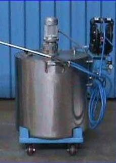
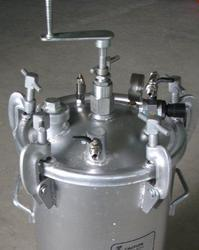
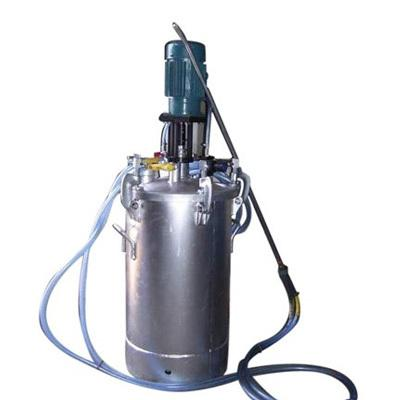
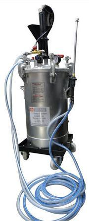
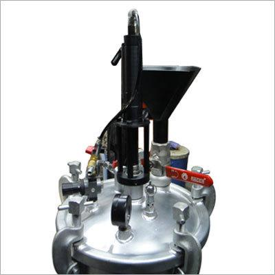
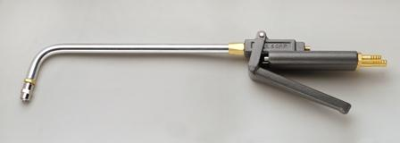
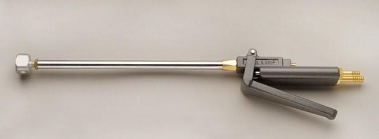
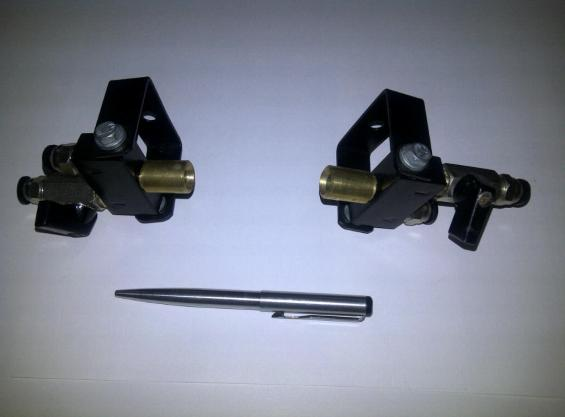
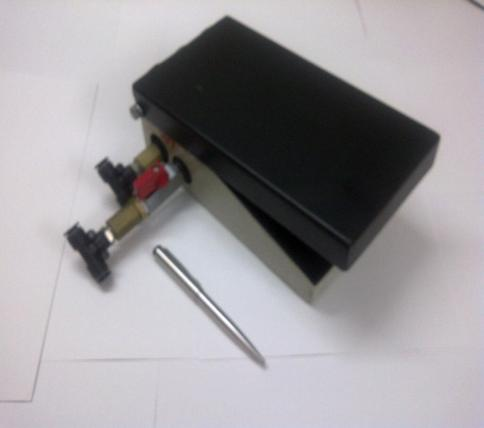

Introduction
Abstract: In closed die forging, use of effective spraying system enables benefits like proper die lubrication, maintenance of correct die temperature and prevention of over-heating or cooling of die, prevention of wastage of die lubricant, ease of forging production and ease of lubrication operation.
A number of forging companies are unable to use appropriate spraying systems due to reasons like operator inconvenience, frequent maintenance downtime of motor and spraying equipment, non-practical design of spraying system, high initial cost and recurring cost of spraying equipment, inability to train workmen regarding correct usage of spraying system, etc.
This article aims at reviewing the benefits of using spraying systems in hot forging die lubrication. Evaluation of various types of die lubricant spraying systems available in the market will be carried out. Shortcomings and benefits of most of the popular types of spraying systems will be listed. An innovative and proven zero maintenance die lubricant spraying system will be introduced.
A range of environment friendly hot forging die lubricants are now available to the Indian forging industry. Water soluble lubricants without graphite are becoming increasingly popular for small to medium size forgings. For large, heavy forgings, graphite based lubricants and oil based lubricants continue to be used.
Environment friendly die lubricants with and without graphite are found to be very effective and economical when used with the appropriate spraying system. They facilitate zero pollution and a clean working environment on the forge shop floor. Use of appropriate die lubricant spraying system gathers much importance in the use of water based die lubricants. A correct spraying system ensures effective die lubrication, reduced wastage of lubricant and increased die life. Ease of operation of die lubricant spraying system determines its acceptability by forging production personnel. Maintenance of the lubricant spraying systems have posed a problem to many forging companies as unplanned downtime of spraying system results in immediate use of furnace oil or such polluting and costly alternatives.
A large number of forging companies are switching over to zero maintenance spraying systems manufactured by SPS to enable effective spraying of hot forging die lubricants on their dies. Before we study the advantages of the zero maintenance spraying system, let us have a quick look at the common forging die lubricant spraying systems available at present, and their pros and cons:
Common Die Lubricant Spraying Systems Available Today
1. Diaphragm Pump Type Spraying System with Motor
This spraying system is very common in large forge shops. The powerful diaphragm pump is capable of spraying up to 133 litres of paint per minute. It is able to spray very high viscosity paints. An even spray is assured. Diaphragm pumps can be powered by pneumatic air or electricity. Re-filling is very easy as the open tank can be topped up with lubricant as and when required. Continuous stirring of lubricant is achieved by a separate motor. This system is very effective where large volumes of paint need to be sprayed continuously.
However, for the purpose of hot forging die lubrication, the diaphragm pump type spraying system is found to be over-equipped and too expensive. The process of forging requires only a small spray of lubricant on the forging dies between each forging blow. Most forging dies do not require more than 300 ml of lubricant per minute. Forging lubricants are diluted in water in high ratios such that the viscosity of lubricant is maintained very low. Hence, the capacity of the diaphragm pump is grossly underutilized if used for forging die lubrication. Maintenance downtime problems usually occur after 12 to 18 months of use of the diaphragm pump. In case of diaphragm pump downtime, the entire spraying system can not be used in any way. Hence, use of diaphragm pump for the purpose of forging die lubrication is a very inappropriate choice.

2. Conventional Pressure Feed Tank with Hand Stirring
This simple spraying system is functional and economical. It is powered by pneumatic air to pressurize the tank and spray the lubricant. Stirring is achieved by manually rotating the handle of the stirrer. Re-filling is time consuming and difficult as the entire lid of the system needs to be unscrewed and dismantled for re-filling. In case of graphite based lubricants, there is a tendency of graphite particles to settle at the bottom of the tank if not stirred continuously. The mixture quality of the lubricant will be affected. Hence, there is room for human error if the operator fails to stir the system manually at frequent intervals.

3. Pressure Feed Tank with Motor
This is the upgraded version of the conventional pressure feed tank. It is powered by pneumatic air to pressurize the tank and spray the lubricant. A motor is affixed on the tank so that continuous stirring of the forging die lubricant is achieved. The rest of the functioning of this system is the same as the conventional pressure feed tank. Addition of the motor invites problems of motor maintenance. However, even if the motor is not functional, the system can still be used for spraying lubricant. A risk of graphite particles settling at the bottom of the tank and affecting the lubricant mix will always prevail in such case.

Considering the pros and cons of all the popular die lubricant spraying systems, SPS has made a breakthrough in this area by designing a special spraying system. This has proven to be better, easier to use and economical.
Zero Maintenance Spraying System
This specially designed, most modern spraying system has proven to be superior to other type of spraying systems mentioned above. Special design enables a number of beneficial features. The spraying system is powered by pneumatic air to pressurize the tank and spray the lubricant. Special internal mechanism ensures that the same compressed air that is used to pressurize the tank acts as an agitator to the lubricant. This ensures continuous mixing of the lubricant and settling of graphite in the tank is not possible.
Additional motor is not required for stirring; hence motor related problems are eliminated. Special design enables quick re-filling of die lubricant in less than a minute, without the use of any mechanical tools. This system is capable of delivering die lubricant up to 3.3 litres per minute for spraying. This is found to be more than sufficient for most forging die lubrication operations. This capacity can be doubled by increasing the compressed air supply up to 5 kgs./sq. cm. There are no user-serviced parts in this system. Unplanned downtime of spraying system is eliminated. No special inventory needs to be maintained for this system. Safety valve, pressure gauge and air pressure regulator ensure safety and ease of operation. Two forging presses can be serviced with one such spraying system by making simple modifications. Tank capacities of 45, 100 and 200 litres are available.


Cons: Tank size of 400 litres is under development and will be available shortly.
Though all types of spraying systems are available with SPS, use of zero-maintenance spraying systems for hot forging die lubrication is strongly advised. A quick comparison chart of all spraying systems is provided below:
Quick Comparison Chart
| Benefits | Zero Maintenance Spraying System | Diaphragm Pump with Motor | Conventional Pressure Feed Tank | Pressure Feed Tank with Motor |
|---|---|---|---|---|
| Ability to deliver all types of die lubricants | Yes | Yes | No | Yes |
| Continuous automatic stirring / agitation of lubricant | Yes | Yes | No | Yes |
| Quick re-filling of die lubricant | Yes | Yes | No | No |
| Long life and low running costs | Yes | No | Yes | No |
| Zero unplanned downtime | Yes | No | Yes | No |
| Low maintenance | Yes | No | Yes | No |
| Low inventory costs | Yes | No | Yes | No |
| Economical | Yes | No | Yes | No |
Double Action Sprayguns
Double action sprayguns for effective die lubrication are available. Two side spray and single side spray capable guns are commonly used for forging die lubrication. Customized nozzles for special applications as per requirement can be developed.


Semi-Automatic Spraying of Lubricant on Forging Dies Through Fixed Nozzles and Foot Operated Pedal
Specially developed spraying nozzles are fastened close to or around the forging die at an angle such that the lubricant spray through the nozzles will land on the forging die. The spray is controlled by a foot operated pedal. This technique is a convenient substitute for sprayguns in hot forging die lubrication and ensures complete safety. Additional workman solely for purpose of spraying lubricant may not be necessary.


Benefits
Use of zero maintenance spraying system manufactured by SPS have proven to enable the following benefits:
- No sticking of forgings. Smooth production.
- Effective lubrication and cooling of die. This leads to increase in die life.
- Quick re-filling of spraying system, in less than 1.5 minutes.
- Zero maintenance of spraying system required.
- Zero maintenance downtime of spraying system ensures continuous production.
- Economical. Affordable and zero recurring cost of forging die lubricant spraying system.
Call to Action: If motor downtime, slow re-filling, or graphite settling are disrupting your forging die lubrication, team SPS can help you evaluate the zero maintenance spraying system for your press.